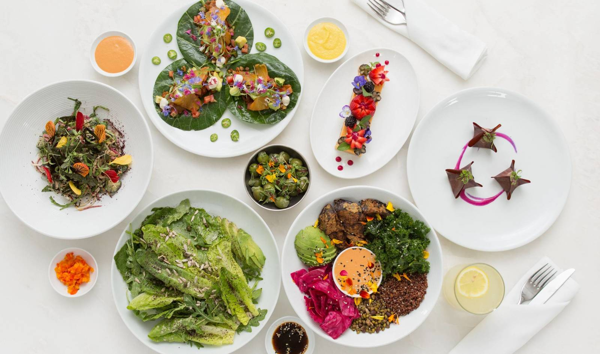

¿Qué es Plant Bassed?
Una dieta a base de plantas o una dieta rica en plantas es una dieta que se compone mayoritaria o totalmente de alimentos de origen vegetal. Los alimentos de origen vegetal son alimentos de origen vegetal sin alimentos de origen animal ni ingredientes artificiales. Si bien una dieta basada en plantas evita o tiene productos animales limitados, no es necesariamente vegana.
